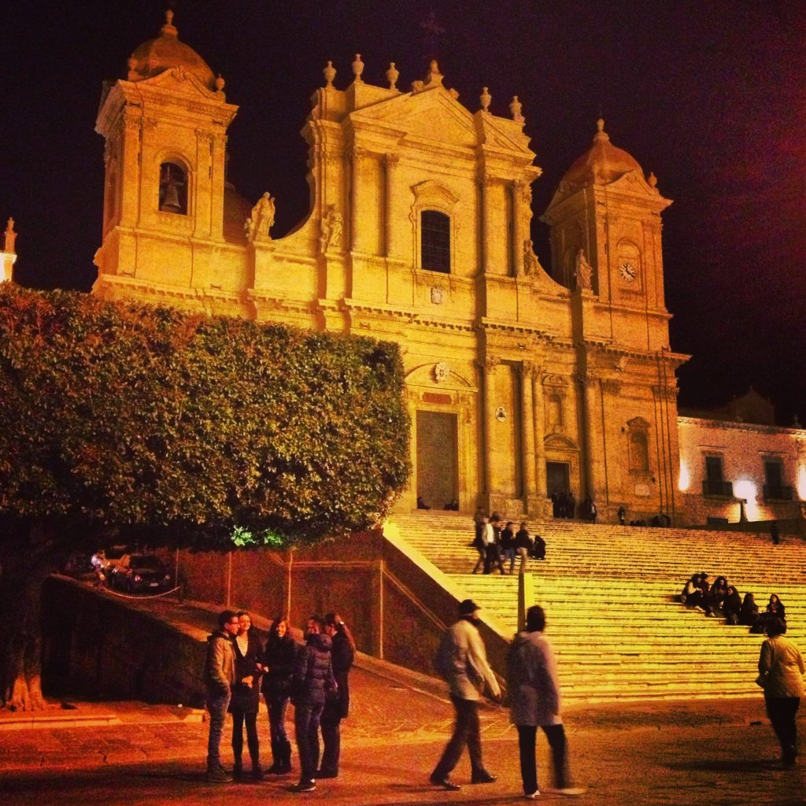

It is customary to offer a salutation when entering or exiting a shop: you say buongiorno (hello) when you arrive and grazie e arrivederci (thanks, good bye) when you leave.
In Italy when you want to address someone who is older than you or someone of your same age whom you do not know, it is proper to show that person respect by greeting him/her with one of the following: buongiorno, buonasera and arrivederci (which means good morning, good afternoon/good evening and goodbye). If you are greeting younger people, or friends and relatives you can simply say ciao (hello, goodbye).
When meeting new people, Italians greet them by shaking hands. They use two kisses (first on the right cheek and second on the left cheek) or a hug with friends (amici) they’ve known for a long time. However, this is not really a strict rule: Italians are very loving and warm people, and it is not unusual that they will kiss you the first time they meet you, especially if you are introduced by someone they trust and know very well. It is also common to see Italian men meet and kiss cheeks.
{This is an excerpt from chapter 14 “Italian lifestyle of the eBook “Italy from the Inside. A native Italian reveals the secrets of traveling in Italy”. Buy our eBook on Amazon and leave us a review! If it’s good, you’ll make us happy, if it’s bad, you’ll make us improve. Thank you either way!}